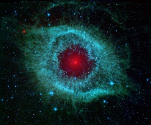

<
>
-
欧洲航天局即将发射首个系外行星望远镜
2019-12-25- 欧洲航天局宣布，首个系外行星望远镜将于12月17日通过联盟号火箭发射升空。
-
科学家首次揭秘火星上的风
2019-12-25- 火星轨道上的火星大气与挥发演化探测器首次对火星上空的风进行测绘，并得到了火星高层大气环流模式...
-
麦克斯韦电磁理论延伸到纳米尺度
2019-12-25- 一篇发表于《自然》的论文将电磁理论延伸到了纳米尺度，其实用性已经经过了纳米共振器的实验验证。...
-
提出广义相对论30多年后，爱因斯坦……
2019-12-25- 1915年，爱因斯坦提出了广义相对论，经过时间的检验，已经成为现代物理学的重要基石...
-
破解土卫二表面的“条纹”之谜
2019-12-25- 土卫二的表面有大量“条纹”，它们相互平行、间隔均匀且只分布在南极。
-
中国科学家研制出世界最高磁场超导磁体
2019-12-25- 中科院电工研究所的研究团队研制出中心磁场高达32.35特斯拉的全超导磁体。
-
LIGO增添新仪器，可每周发现引力波
2019-12-25- 最近，LIGO望远镜增添了用于探测引力波的新仪器——量子真空挤压机。该仪器使得研究人员几乎每周都...
-
它推翻了存在半个世纪的理论
2019-12-25- 2018年8月，帕克太阳探测器（Parker Solar Probe）从美国佛罗里达州的肯尼迪航天中心升空，踏上史...
最新研究

- Science 一周论文导读 2019/12/24
- Science 一周论文导读 2019/12/24
- Science 一周论文导读 2019/12/24
图片
